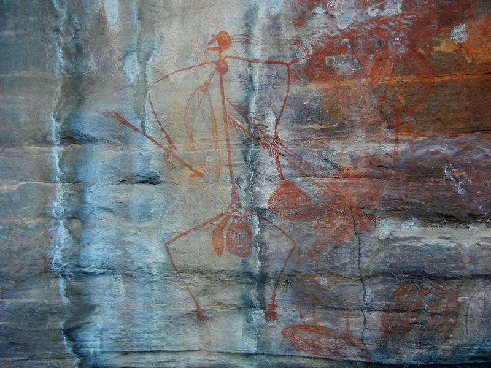

Seasons Greetings from The Antipodes
It is our third festive season Down Under, and the sounds of Christmas carols under a baking Australian sun is just as discombobulating as ever. However, after so many years of obsessively tracking the fall weather systems in the Gulf of Alaska, the habit endures, and since we've been checking out the snow conditions back “home” for a while now, it must be time to put the annual Xmas letter together.
It was another whirlwind year living homeless in this magical land. We started the year house sitting Rose and Andrew's lovely garden home in Cairns in Far North Queensland. The North Queensland wet season has quite a reputation, and we were prepared for the worst, but in truth, it wasn't nearly as painful as imagined. It was hot and sticky, but not too bad, and we slept well every night without air conditioning. Camping was out of the question, but with stinger suits on, we continued to paddle our yaks in the warm waters of the Coral Sea near Cairns. Doug also took the opportunity to do some work for his long-suffering client in Calgary.
In January, we had a nice visit from Doug's cousin Kathy, her husband Gary, and daughter Emma. This makes two meetings in 20 years – this craziness has to stop.
Rose and Andrew returned from their trip down south in late March, so we said goodbye to all our new Cairns friends and headed off for some wonderful sea kayaking in the Whitsundays and other islands on the Townsville to Mackay section of the Queensland coast.
In between trips, we were holed up in our little caravan in Bowen when the eye of cyclone Ita passed directly overhead. It was a good thing it had weakened from category 5 to category 1, as it was pretty exciting as it was, with very strong winds and intense rainfall – Doug went outside to move the car during the peak of the storm (in his bathing suit), and it can only be compared to standing under a fire hose – unbelievable.
Once the weather was looking like it was set up for a good long blow, we packed up the paddling gear and headed inland. The whole east coast of Australia is generally pretty green and hilly, but once you head inland, things change quickly. The Great Dividing Range gives way to the flats of outback Queensland and NSW, and the magnificent eucalypt and tropical forests give way to open woodland, savannah, and scrub.
Outback Queensland and the Northern Territory are to home to some extraordinary places – imagine walking across a scorching hot savannah, disturbing a few kangaroos and lizards, passing by some ancient Aboriginal rock art

until you encounter a crystal clear waterfall cascading into a beautiful warm water swimming hole rimmed by towering red rock cliffs
and you'll have the right idea. Unfortunately, these oases are typically separated by long stretches of fascinating fly habitat.
There is no winter in the lineup of NT seasons, only “the buildup”, “the wet” and “the dry”. The only time to visit is the dry, and that's when we went, but even though it is winter for the rest of the country it is by no means “the cool”. We experienced temperatures as hot as 36C in the coldest period of the year, although we also had long stretches of high 20s, which is as cold as it gets.
We ambled our way north, exploring the gorges and waterfalls in our kayaks and on foot. Australia is famous for animal hazards: encounters with snakes, spiders, jellyfish, sharks, and crocs being the popular ways to buy the farm. While playing up the dangers is a national passtime, I actually find Oz less threatening that the Frozen North: I'll take the snakes, spiders, and sharks over avalanches and grizzlies any day. Crocs, however, are a different story altogether. Swimming in a river with a known croc population is like slathering yourself in raw chicken guts and entering a lion cage full of felines who haven't been fed in two weeks. Any nearby salty will quickly remove you from the gene pool – no joking matter. Luckily the National Parks clears out the salties from certain rivers at the beginning of each dry season, and then declares them safe for paddling and swimming.
After walking and paddling many iconic Australian gems such as Boodjamulla, Katherine Gorge, Jatbula Track, and Kakadu, we rolled into Darwin and setup the van under a giant banana tree on our sister-in-law Janice's driveway. Sadly, and much to our dismay, the bananas didn't quite ripen while we were there, but nonetheless we so enjoyed Janice's hospitality, that we spent two weeks in Darwin, getting a much needed break from life in the caravan – and after 26 years, Doug finally met Sandra's brother Keith. Darwin is a nice town on a tropical sea that is obviously experiencing a boom with much natural gas related construction ongoing. There are beautiful beaches right within the city limits, which enabled us to add the Timor Sea to the list of oceans we've swum in since our arrival Down Under (4 and counting).
After Darwin, a lap of the Tabletop Track in Litchfield National Park was followed by a week of rock climbing at Hayes Creek. Next stop on the Magical Mystery Tour was Alice Springs in the “Red Centre”, which is pretty much the geographic centre of the continent. We really liked Alice and loved the Red Centre. In late winter, when we were there, the weather is pretty dreamy: endless cloudless days with cool nights and warm days. Alice is a surprisingly clean, neat, orderly, and well maintained town. It is situated amongst the Macdonnell Ranges and actually quite a pretty place. If it were a few thousand kilometres closer to the coast, we might have just stayed. Instead, we spent the next six weeks exploring the ranges, gorges, and monoliths of the Red Centre, including the stunning 223 km Larapinta Trail.
By the beginning of September, things were starting to heat up in the Alice, and we had been in-country for two years without yet visiting Mt Arapiles, Australia's most famous rock climbing area. It was time to remedy that, so we steeled ourselves and over two weeks made the long drive south to Victoria.
Arapiles has been called “The Best Cliff in the World”, but our experiences with Australian rock climbing have been pretty checkered, to be diplomatic, so we were rather guarded in our expectations for the place. In the end, we spent nearly two months there and found it one of the best climbing areas we have ever visited – an absolute nirvana for aging, untalented traditional rock climbers. The place absolutely rocks.
In the middle of our Arapiles stay, we were ecstatic to receive our first Canadian visitors – our good friends Roland and Murielle from Nelson came to Australia for a couple months of road biking in Victoria and Tasmania. They took some time out of the saddle to join us for some bushwalking in the Grampians and a week long sea kayak trip on Gippsland Lakes in SE Victoria.
After we finally tired of Arapiles, we headed south once again, hiking in the Grampians
and paddling and walking on the SW coast of Victoria.
If you've made it this far in this long missive, consider yourself up to date on Sandra and Doug's Excellent Adventure. We're well into our third year of being homeless, and don't seem to be inclined to do anything about that anytime soon. Where will we be next Christmas? We have no idea.

As the sun sets on another circuit around our star
we wish our friends and family health, happiness and all good things in the year ahead.
Doug & Sandy.